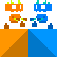

Graduate Mechanical Engineer
Game physics | 3D maths | Unreal | C++ | Python
Game Development
I've published a couple of games to Google Play in beta (Collide-O-Scope and Testing Your Marbles, now lapsed) and had a hand in a few others through game jams and hackathons - Rope Roll-up, Pitfighter, Calculator Crisis and a driving game where you lean to steer and smile to go faster. I also like to explore possibilities for future games. Here are some video clips to give a flavour of what I've been doing. Enjoy.
Collide-O-Scope is a cooperative 2D puzzle platformer I made to teach school students how to use the Unreal Engine. I created tools to help them build their own levels and we published a beta version to Google Play back in 2017 (now lapsed).
The blue character can pass through orange obstacles but not blue and vice versa. The task is to get both characters to the finish.
Testing Your Marbles originated back in 2016 when exploring features of the Unreal Engine. A beta version for mobile was released on Google Play in 2017. It's a 3D physics-based puzzle-platformer where you get to roll and jump your way through puzzling obstacle courses. Much effort was spent on creating intuitive movement and decent camera behaviour.
Game Physics
I've tinkered with many refinements and extensions. As an alternative to conventional marbles I created a rolling robot. I was looking for something to visually explain the powered rolling and jumping motion - without putting a running monkey inside. It can tumble about any axis but has a tendency to right itself. A solar panel and energy cells completed the look.
I've also toyed with a squishy, rolling lump of playdough. It jumps by springing back into shape.
I created various wave like connected forms that lift and transport balls
and various contraptions
Polygon triangulation in C++ and Unreal
This was a personal project to triangulate arbitrary polygons drawn in Unreal so that they would simulate physics. Most of the processing is done in C++ and Blueprint is used to call the relevant functions.
...it also works with holes.

Game Playing AI with C++
I am also interested in the use of AI in games. This was a personal project to explore the creation of opponents for 2 player zero-sum games. I made simulations for noughts and crosses, Connect 4 and Mancala and tested a variety of techniques including minimax, alphabeta and hand crafted heuristics.
Python Bots
Although I enjoy soving puzzles myself, I've also written several python bots to do it for me. These solve puzzles from an online site - sudoku, jigsaw sudoku, inertia, flip and guess (aka mastermind). They use image processing to identify the puzzle, and Python to control the keyboard and mouse to enter the solution. I added a delay to make it possible to view each move.